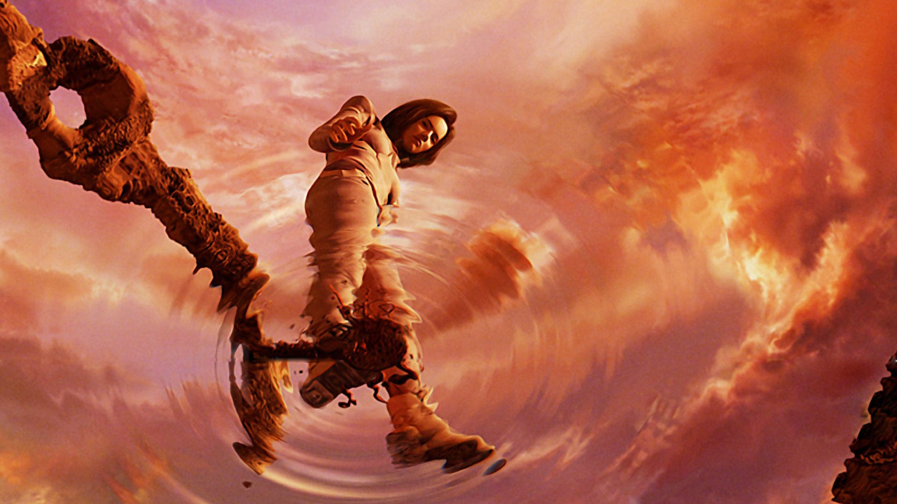

ﾠﾠﾠ ﾠFinal Fantasy: The Spirits Within conta a história de uma Terra infestada de alienígenas no ano de 2065. Os humanos vivem em "cidades barreira", todos numa tentativa de livrar o planeta dos Phantoms (que significa Fantasmas), uma misteriosa raça alienígena. A única esperança vem da cientista Aki Ross e de seu mentor, Dr. Sid, que tem um plano de destruir os Phantoms sem causar danos ao planeta, mas um general chamado Hein está determinado à usar o canhão espacial "Zeus" para destruir os Phantoms - mesmo que isso cause danos à Terra no processo.